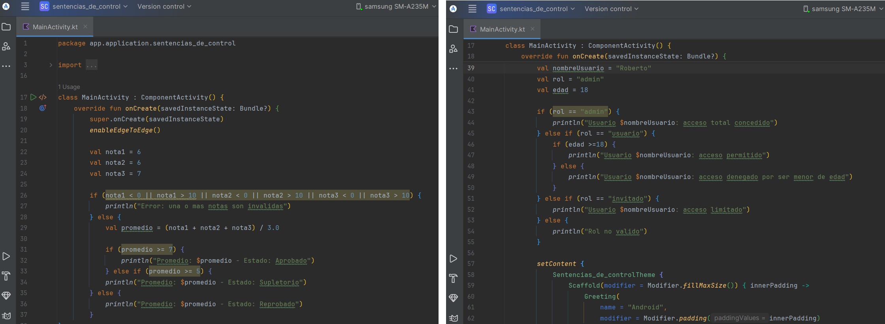

Fundamentos de Programación
Las sentencias de control son instrucciones que permiten dirigir el flujo de ejecución de un programa. Gracias a ellas, una aplicación puede tomar decisiones, repetir procesos y ejecutar acciones únicamente cuando se cumplen ciertas condiciones.
En otras palabras, las sentencias de control hacen que el programa pueda decidir qué camino seguir y cuántas veces ejecutar una acción.
La estructura if / else en Kotlin permite ejecutar bloques de código según una condición lógica.
if (condicion) {
// código si es verdadero
} else {
// código si es falso
}
Ejemplo:
val edad = 20
if (edad >= 18) {
println("Puede ingresar")
} else {
println("No puede ingresar")
}
Resultado en pantalla:
Puede ingresar
El bucle for en Kotlin se usa comúnmente con rangos numéricos.
for (i in inicio..fin) {
// código que se repite
}
Ejemplo:
for (i in 1..5) {
println(i)
}
Resultado en pantalla:
1 2 3 4 5
El bucle while ejecuta el código mientras la condición sea verdadera.
var contador = 1
while (contador <= 3) {
println(contador)
contador++
}
Resultado en pantalla:
1 2 3
Crea un programa que determine si una persona puede votar según su edad.
val edad = 20
if (edad >= 16) {
println("Puede votar")
} else {
println("No puede votar")
}
Resultado en pantalla:
Puede votar
Crea un programa que muestre los números del 1 al 5 usando un bucle.
for (i in 1..5) {
println(i)
}
Resultado en pantalla:
1 2 3 4 5
En el primer ejercicio se utilizó la sentencia de control if / else para evaluar la edad y determinar si una persona puede votar. En el segundo ejercicio se empleó un bucle for para mostrar una secuencia de números de forma repetitiva.
En el siguiente enlace se encuentra el video donde se explica paso a paso la resolución de los dos ejercicios prácticos, con cámara encendida.
Enlace al video (Google Drive):
https://drive.google.com/file/d/11y8mQfyMxAtNDAdh62bm7xlrLVwieRhE/view